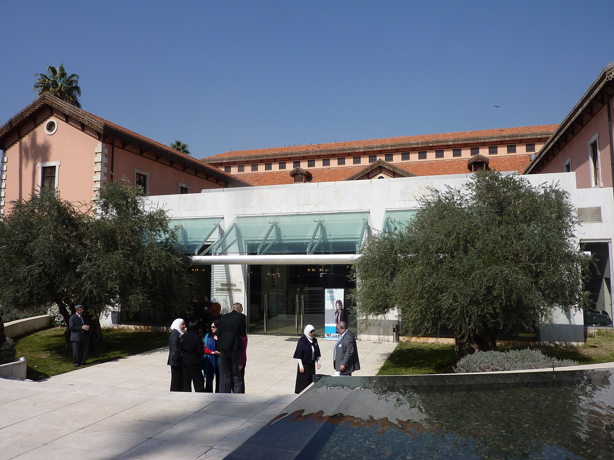

Bringing Syria’s Scholars Back In
By creating pathways for remote teaching, temporary return and research collaboration, Syria can begin recovering the expertise lost through years of repression and war.

As Syria begins reconstruction, its universities face an acute shortage of qualified faculty. For decades, academic emigration had weakened Syrian higher education (HE), with conflict accelerating that loss. Estimates indicate that between 20 and 30 percent of university academics left the country during the war, equivalent to approximately 1,500 to 2,000 professors. Their departure depleted specialized departments, increased reliance on underqualified instructors, and widened gaps in student learning. Altogether, academic brain drain is reported to have had “the most damaging effect on the quality of the HE sector.”
To rebuild the human infrastructure of Syrian higher education and remedy these consequences, Syria need not pursue permanent return as the immediate or sole objective of its diaspora policy. Instead, the Ministry of Higher Education and Scientific Research, in conjunction with Syrian universities, could create structured ways for academics abroad to contribute to teaching, research, curricular reform, relationship building, and institutional reconstruction, all while improving the conditions that would make long-term and permanent return possible over time.
How Syria Lost Its Academic Workforce
Syrian academics left the country for a complex and often overlapping set of political, security, and economic reasons. For many, political repression made departure unavoidable. Migration became a “necessary course of action for educators who were incapable or unwilling to fake loyalty” to the regime. In anonymous interviews, one Syrian academic noted that they left Damascus precisely because they felt that they “‘should not keep silent,’” while another explained that they could not “‘stay in a country full of oppression and tyranny,’” nor could they “‘stand to see the killing of civilians and remain silent.’” Food scientist Kassem Al-Sayed Mahmoud, for example, fled due to national service requirements because he “‘couldn’t support the army’s actions against innocent civilians.’”
Others were directly targeted by the state. Dr. Radwan Ziadeh, now a senior fellow at the Arab Center in Washington DC, left Syria in 2007 after his human-rights activism made him a government target. In an interview with the Network, Dr. Ziadeh explained that he experienced house arrest and interrogation at the hands of the Assad regime, and how the threat of imprisonment led to his decision to continue his work abroad. His experience, he emphasized, was the “story of many.”
War compounded this politically driven exodus by disrupting the system through which Syria trained and replenished its academic workforce. Western sanctions and the country’s political isolation caused students to lose access to international training. Moreover, “‘A significant number of those sent abroad for doctoral studies before the war did not return,’” per Talal al-Shihabi, an engineering professor at Damascus University. Now, “‘some specialized fields, such as engineering and health disciplines, are left with very few teaching staff members over the last decade.’” These shortages have contributed to students graduating “with significant knowledge gaps in some disciplines,” and have also increased the presence of less qualified educators, as mitigation efforts have involved bringing in administrators, retired staff, and under-qualified teachers to fill the gaps. To this end, “some courses were taught exclusively by Master’s degree holders.”
Syria must now take targeted steps to address academic brain drain and its consequences, lest the country’s HE sector continue to experience outmigration “long after the formal cessation of conflict,” as has been the fate of other post-conflict states, like Bosnia and Kosovo.
Diaspora Return versus Engagement
When considering the stories of academics like Dr. Ziadeh, it is apparent that protection from political persecution stands as a critical first step toward facilitating the long-term and permanent return of the Syrian academic diaspora. In comparable contexts, such as Iraq, potential returnees were dissuaded by the “high level of insecurity, including reports of assassinations of those that braved returning.” When considering the reasons mentioned by other scholars for having left Syria, it is likely that a governmental commitment to political and academic freedoms also constitute meaningful preconditions to achieve diaspora return.
At the same time, diaspora return often demands targeted and potentially expensive policies, including incentive schemes like increased salaries and tenure track positions for junior faculty. While costly, experiences in comparable settings demonstrate its relative efficiency: a 2002 UNDP report on Angola’s post-conflict recovery found that “‘it would be more efficient and equitable to train a larger number of students at [the] tertiary level within the country, by developing the university faculties and institutes, than to send a relatively small number of students abroad at enormous cost and with a high risk of non-return.’” In this way, drawing upon Syria’s existing academic diaspora would adhere to such guidance, directly building up the HE sector’s human infrastructure.
While the political commitments and economic costs associated with long-term and permanent diaspora return do not preclude it from the Syrian context, they increase its difficulty and render it less initially feasible. Such challenges are compounded by the reality that many academics have built new lives abroad, including families, professional networks, and secure academic positions. Thus, Syria could look toward diaspora engagement as a more immediate and more practical method of combatting academic brain drain.
Broadly speaking, engagement consists in facilitating connections between exiled scholars and those that have remained, such that Syria need not wait for diaspora academics to return permanently to benefit from their expertise. Instead, diaspora scholars could contribute directly via remote teaching, thesis supervision, and mentorship opportunities at Syrian universities. In this way, Syria can minimize brain drain and transform it into a form of brain circulation that introduces novel methods, techniques, technologies, and other foreign know-how, thereby facilitating long-term improvements in its HE sector. One potential area for such improvements is curricular reform, long recognized as experiencing critical deficits. Lecturers and students alike have noted that Syrian HE is “overly theoretical, with little emphasis on presentations, teamwork, or practical projects,” such that many describe their education as “irrelevant to the labour market and… the skills needed to succeed.” In striving for such improvements, diaspora academics are especially suited to aid in knowledge transfers due to the “‘absence of language and cultural barriers’” and their resultant “‘ability to better understand, and thus, more effectively adapt foreign approaches and technology to the homeland context.’”
The Network’s discussion of the broader Syrian academic diaspora with Dr. Ziadeh lends credence to the potential of engagement. Dr. Ziadeh believes that most diaspora academics are interested in contributing to reconstruction, including himself, having realized his hope of returning to Syria in December 2024, the same month the Assad regime fell. To this end, Dr. Ziadeh described “the Syrian community in the United States [as] very well-organized, very well-connected.”
Engagement with Syria’s academic diaspora could also contribute to resolving a variety of longer-standing issues facing the HE sector, including research and accreditation. Interviews and group discussions with students and academics at universities in Northern Syria have revealed deficits in publisher recognition and international journal access as critical barriers to conducting scholarly research. Such barriers are compounded by the challenge of accreditation, with a lack of international recognition leading to “tens of thousands of students” having graduated with unaccredited degrees in non-regime areas during the conflict. To resolve this problem and facilitate accreditation, Syrian academics have stressed the need “to build relationships at the international level.” When considering the potential connections held by diaspora academics and related organizations like the Institute for International Education, whose Scholars Rescue Fund arranges and funds fellowships for threatened and displaced scholars, engagement with Syria’s academic diaspora presents itself as one potential avenue for the relationship building necessary to achieve accreditation, expand journal access, and increase publisher recognition. Such relationships may even give rise to international partnerships between universities in Syria and abroad, providing useful benefits like “access to educational resources… and opportunities for research collaboration.”
During his trip, Dr. Ziadeh met with the president of Damascus University, to whom he was appointed an advisor. Having also met with the presidents of Yarmouk and Kalamoon universities, Dr. Ziadeh and these leaders are now thinking “to establish and build [an] American university in Syria,” modeled on that of Beirut and of Cairo, with a stated goal of raising “the quality of higher education in Syria.” Such early efforts stand as a testament not only to the interest and willingness of Syria’s academic diaspora to contribute to reconstruction, but also the potential of engagement to facilitate long-lasting, institutional improvements in the HE sector.
A Strategy for Academic Diaspora Engagement
To begin, Damascus could create a clear institutional point of contact for academics abroad. The Ministry of Higher Education and Scientific Research could establish a Directorate of Planning and International Cooperation, similar to that of the Ministry of Education, to be complemented by designated diaspora liaisons at major universities. According to Oudai Tozan, founder of the Syrian Academics and Researchers Network in the United Kingdom, diaspora groups currently have no identifiable institution toward which they can direct offers of support. A dedicated office could receive those offers, connect academics with appropriate universities, and coordinate engagement across institutions.
Second, the Ministry should determine where assistance is needed most and who is available to provide it. In conjunction with Syrian universities, it could conduct a national assessment of faculty losses and staffing shortages by discipline, institution, and region.[^1] Professor al-Shihabi has similarly emphasized “the need for a comprehensive survey to assess human losses” caused by wartime emigration. That assessment could be paired with a voluntary registry of Syrian academics abroad that records their specializations, as well as their experience in and willingness to teach, supervise, or mentor students, conduct research, or return for limited periods of time. Together, these initiatives would enable the Ministry to match diaspora expertise with specific institutional needs, rather than relying on informal connections or isolated offers of assistance.
Finally, Damascus should create flexible programs through which diaspora academics can contribute without returning permanently. One potential model is the International Organization for Migration’s Temporary Return of Qualified Nationals project, which supported the return of skilled members of the Afghan diaspora for placements averaging three months. Syrian universities could similarly offer semester-long visiting professorships alongside shorter research placements and intensive teaching visits. Such activities could be supplemented by remote teaching, thesis supervision, and mentorship arrangements, as well as curriculum-development partnerships and joint research initiatives. Beginning with small pilots in disciplines facing the most severe shortages would allow universities to test these arrangements before expansion, while still maximizing the benefits of temporary return.
These measures would not eliminate the need for greater academic freedom, improved salaries, and safer working conditions capable of supporting permanent return. They would, however, allow Syria to begin drawing on the expertise of academics abroad now. Syria would be remiss not to harness the power of its academic diaspora, who sit among the Syrian people as part of what Dr. Ziadeh calls “the precious things Syria has.”
[^1]: In 2025, the Ministry of Education announced that it is carrying out such an effort for Syrian schools, cited hereafter: Ruaa al-Jazaeri, International Cooperation Directorate at Education Ministry Continues Efforts to Improve Education Quality, Education, March 4, 2025, https://sana.sy/en/education/348693/.
Publication format
Website article